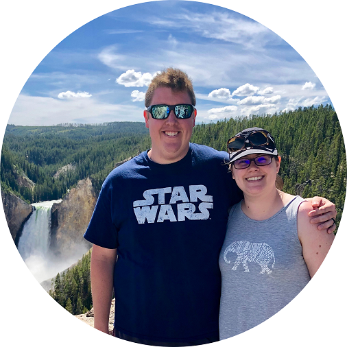

Welcome to my site! I am dipping my toes into the web development world, this site is a product of my exploration. I am a 31 year old southern boy, currently residing in Western North Carolina. I love the mountains and all they have to offer, particularly hiking and camping. A good weekend is one spent in nature.
I currently work as an IT technician for Advanced Data and Network Solutions, a Managed Service Provider based in Asheville, NC. I most enjoy troubleshooting network issues, but also work with server administration and phone system maintenance. Suffering through printers and fax machines is the unfortunate but necessary part of my work as well.
When not at work or play, I am enjoying life with my wife, Bethany, and are two cats, Catniss and Asher. We love to play games, watch movies, and cook eat delicious foods!